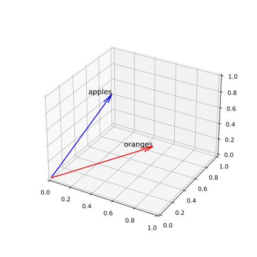
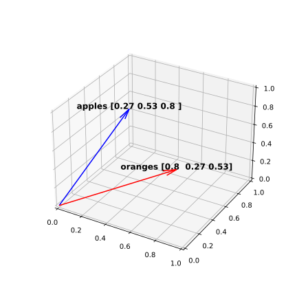
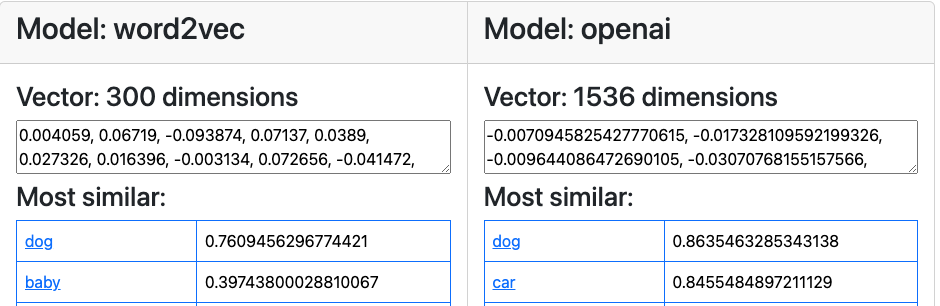
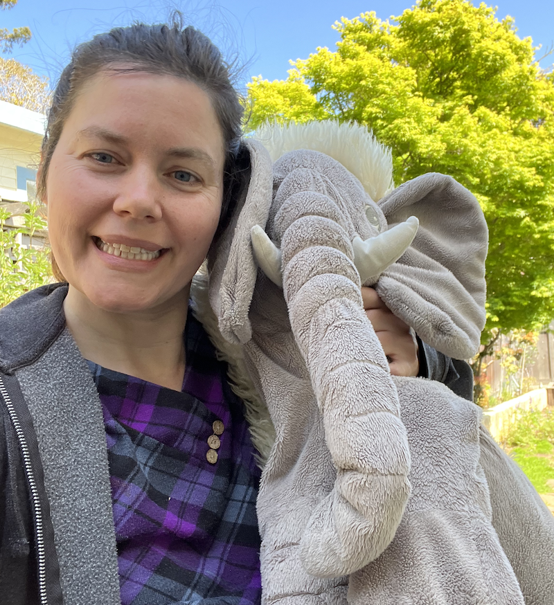

Convergence
in vector space
github.com/pamelafox/convergence-with-vectors
pamelafox.org
About me
Pamela Fox
Principal Cloud Advocate at Microsoft
Formerly: UC Berkeley, Coursera,
Khan Academy, Google
| 🔗 @pamelafox | |
| 🔗 linkedin.com/in/pamela-s-fox | |
| GitHub | 🔗 github.com/pamelafox |
| Website | 🔗 pamelafox.org |

Let's play Convergence
- Two players face each other.
- Everyone counts down, "3..2..1"
- They both yell a word at the same time,
like "fire" and "whale". - Everyone thinks:
"What single word is between those two words?" - Two new players count down and yell their words,
like "blubber" and "engine". - Same word? Everyone wins! 🎉
Different words? Keep going.
Your turn! 🎤
3… 2… 1…
Now the models play!
How did that work?? 🤔
Words as vectors

What are vectors?

Vectors are lists of numbers that represent items in a high-dimensional space.
Each number is a dimension.
An embedding model turns text into a vector:
"fire" → [-0.030, 0.089, 0.008, 0.048, …]
(384 dimensions with MiniLM L6)
Open-weight vector embedding models
| MiniLM L6 | MiniLM L12 | BGE Small | Harrier 270M | mxbai Embed Large | Qwen3 Embedding 0.6B | |
|---|---|---|---|---|---|---|
| Published by | Hugging Face | Hugging Face | BAAI | Microsoft | Mixedbread | Qwen |
| Parameters | 23 M | 33 M | 33 M | 268 M | 335 M | 596 M |
| Dimensions | 384 | 384 | 384 | 640 | 1,024 | 1,024 |
| Max tokens | 256 | 128 | 512 | 32,768 | 512 | 32,768 |
| Languages | English | English | English | Multilingual | English | Multilingual |
| MTEB (eng, v2) | 59.0 | — | 64.3 | — | 66.3 | 70.5 |
| MTEB (multi) | 41.4 | — | 43.8 | 66.6 | 45.9 | 64.3 |
Generating embeddings with Python
Download model weights from Hugging Face
and generate embeddings with SentenceTransformer:
from sentence_transformers import SentenceTransformer
model = SentenceTransformer(
"sentence-transformers/all-MiniLM-L6-v2")
vectors = model.encode(["fire", "whale"],
normalize_embeddings=True)
print(vectors.shape) # (2, 384)
🔗 Full code: embed.py
Comparing vectors: cosine similarity
How closely do two vectors point in the same direction?
fire, flame = model.encode(
["fire", "flame"],
normalize_embeddings=True)
# Full formula
np.dot(fire, flame) / (
np.linalg.norm(fire) *
np.linalg.norm(flame)) # 0.80
# Normalized (length 1), so just:
np.dot(fire, flame) # 0.80

🔗 Full code: cosine.py
Nearest neighbors of "fire"
Compare "fire" to every word in a vocabulary, sort by similarity:
| Word | Cosine similarity |
|---|---|
| flame | 0.80 |
| smoke | 0.67 |
| firefighter | 0.61 |
| flamingo 🦩 | 0.58 |
| stove | 0.57 |
Flamingo?! Models see spelling too: "flam-" ≈ "flame".
Visualizing vectors
🔗 pamelafox.github.io/vectors-comparison
🔗 More in my blog post: A visual exploration of vector embeddings
Finding the word between two words
The game, as code
- Embed a vocabulary of ~1000 concrete nouns (once).
- Embed the two input words, a and b.
- For every candidate word w:
s_a = cos(w, a),s_b = cos(w, b) - Combine those into one score with an operator.
- Pick the top-scoring word (but not a or b).
Two models do this independently each round. Same word? Converged! 🎉
Operator 1: Centroid
Average the two vectors, find the closest word to the midpoint.
query = normalize(vec_a + vec_b)
scores = np.dot(vocab.vectors, query)
Ranks the same as s_a + s_b, so one very strong link can win.
Operator 2: Balanced
A word is only as good as its weaker connection.
scores = np.minimum(sim_a, sim_b)
Also known as maximin (maximize the minimum).
Operator 3: Geometric mean
Reward words that are close to both, multiplicatively.
scores = np.sqrt(
np.clip(sim_a, 0, None) * np.clip(sim_b, 0, None))
The word with the biggest rectangle s_a × s_b wins.
Operator 4: Textual
Let the model combine them: embed a phrase.
phrase = f"{word_a} and {word_b}"
phrase_vec = model.encode(
[phrase], normalize_embeddings=True)[0]
scores = np.dot(vocab.vectors, phrase_vec)
Behaves a lot like centroid in practice.
The game loop
pair = (word_a, word_b)
for round_number in range(1, max_rounds + 1):
# Each model picks its top word, excluding the pair
picks = tuple(top_word(model, operator, pair)
for model in (model_a, model_b))
if picks[0] == picks[1]:
return "converged", round_number
if picks in seen:
return "loop", round_number
seen.add(picks)
pair = picks
return "round_limit", max_rounds
🔗 Full code: simulate_convergence.py
Let's play again! 🎲
Embedding model battle ⚔️
The battle setup
- 6 models → 15 pairings (+ each model vs. itself)
- Same 100 random starting pairs for every pairing
- Up to 10 rounds per game
- Outcomes: converged, loop (a pair repeats), or round limit
uv run model_battle.py --games 100 --operator centroid
Runs in ~10 seconds: the vocabulary vectors are precomputed in SQLite.
Self-play: instant convergence
A model vs. itself converges in round 1, every time.
Same vectors + same math = same word.
Convergence is only interesting when the players see the world differently.
Which pairs converge most?
🤝 Most
| MiniLM L6 + MiniLM L12 | 97% |
| MiniLM L6 + BGE Small | 97% |
| MiniLM L12 + BGE Small | 95% |
| BGE Small + mxbai | 92% |
🙅 Least
| BGE Small + Qwen3 | 71% |
| mxbai + Qwen3 | 71% |
| Harrier + Qwen3 | 73% |
| mxbai + Harrier | 73% |
Centroid operator. Similar small models think alike; Qwen3 is the odd one out.
Best benchmark ≠ best teammate
| Model | Converges vs. others | Avg rounds | Loops | MTEB (eng) | MTEB (multi) |
|---|---|---|---|---|---|
| MiniLM L6 | 88% | 2.6 | 12% | 59.0 | 41.4 |
| MiniLM L12 | 87% | 2.5 | 12% | – | – |
| BGE Small | 86% | 2.8 | 13% | 64.3 | 43.8 |
| mxbai Embed Large | 83% | 2.7 | 17% | 66.3 | 45.9 |
| Harrier 270M | 77% | 3.1 | 22% | – | 66.6 |
| Qwen3 Embedding 0.6B | 73% | 3.4 | 26% | 70.5 | 64.3 |
The highest MTEB scores converge the least. Benchmarks measure their tasks, not yours!
Does the operator matter?
| Operator | Converged | Avg rounds | Loops |
|---|---|---|---|
| Textual | 85% | 2.8 | 15% |
| Centroid | 82% | 2.8 | 17% |
| Geometric mean | 80% | 3.1 | 19% |
| Balanced | 51% | 4.6 | 27% |
Balanced picks from a crowded middle, where tiny differences between models flip the winner. How you combine vectors matters as much as which model you use.
The longest roads to convergence
MiniLM L6 vs. Qwen3, 10 rounds:
bear + clay → donkey + clam → elephant + dolphin → whale + salamander → frog + jellyfish →
lizard + salamander → frog + crocodile → alligator + salamander → lizard + crocodile →
alligator + scorpion → crocodile 🐊
BGE Small vs. Qwen3, 10 rounds:
pistachio + rocket → peanut + pomegranate → shrimp + pistachio → peanut + sardine →
nut + mackerel → peanut + herring → walnut + mackerel → herring + sardine →
salmon + mackerel → trout + sardine → salmon 🐟
Qwen3 gets stuck in a theme and drags the other model along.
Surprisingly weird choices
- blubber + engine → MiniLM L6 says bluejay, then blueberry 🫐
"blu-" spelling beats meaning - fire is close to flamingo 🦩
- fire + whale → Qwen3 says narwhal; MiniLM says flame
- earring + modem → centroid says ear; balanced says phone
Single words are ambiguous and short: models fall back on spelling and the stronger word.
Takeaways
What Convergence teaches about vector search
- Embeddings capture meaning (and sometimes spelling).
- Models disagree: test with your own data, not only benchmarks.
- Combining signals is a design choice, like ranking in hybrid search.
- The candidate set matters: models can only pick what's in the vocabulary, like search can only return what's indexed.
Where vector search is useful
- 🔍 Semantic search: find documents by meaning, not keywords
- 🛍️ Recommendations: "similar items"
- 🤖 RAG: retrieve context for LLM answers
- 🧹 Deduplication and clustering: group near-duplicates
- 🎲 Word games, obviously
Thank you!

Code, slides, and the game:
github.com/pamelafox/convergence-with-vectors
Play it: tinyurl.com/play-convergence · How the operators work
Find me online at pamelafox.org